1. Antes de empezar
LECTURA OBLIGATORIA
Se recomienda tener conocimientos previos de subnetting.
Recomendacion: no saltarse estos capitulos de subnetting recomendados.
1.2. Introducción
Este manual cubre los aspectos básicos para comenzar a trabajar con Cisco Packet Tracer. Para una comprensión más profunda y para casos de uso más avanzados, se recomienda consultar la documentación oficial de Cisco y otros recursos educativos especializados, como la academia online Cisco Skills for All.
2. Interfaz Gráfica de Usuario (GUI) de Packet Tracer
2.1 Explicación de la Interfaz Gráfica del Packet Tracer
La interfaz gráfica de Cisco Packet Tracer se divide en varias áreas principales:
- Área de Trabajo: Es el espacio grande en el centro de la pantalla donde se diseñan y visualizan las redes.
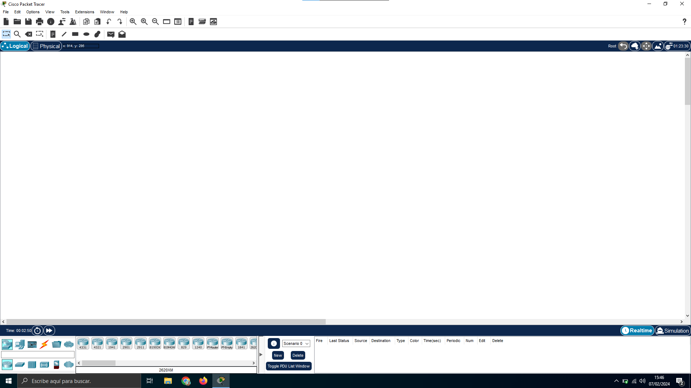
- Dispositivos y Componentes: abajo al lado izquierdo, encontrarás la lista de dispositivos y componentes que puedes arrastrar al área de trabajo. Estos están organizados en categorías como Routers, Switches, Dispositivos finales, etc.
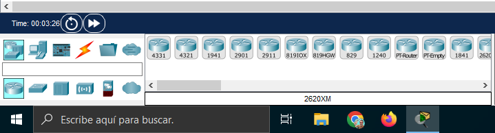 - Propiedades del dispositivo: Al hacer clic en un dispositivo, se muestra la vista de interfaces que tiene el dispositivo
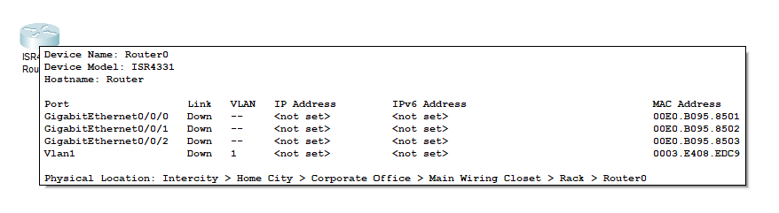
- Barra de Herramientas: En la parte superior, se encuentra la barra de herramientas que ofrece acceso rápido a funciones como guardar, abrir, copiar, pegar, deshacer, entre otras cosas.
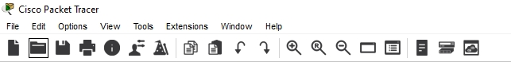
- Modos de Simulación y Tiempo Real: En la esquina inferior derecha, puedes cambiar entre los modos de simulación y tiempo real.

2.2 Uso de los Ordenadores en Packet tracer
2.2.1: Configurar la Dirección IP del Ordenador
Acceder a la Configuración del Ordenador (con clic izquierdo):
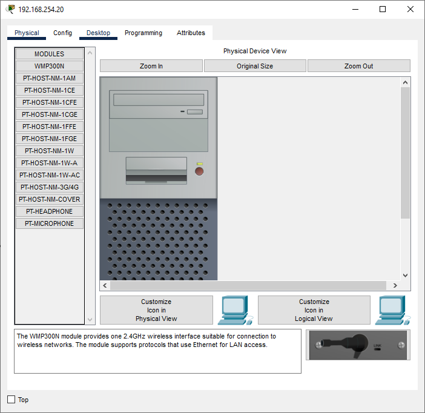
Selecciona la pestaña "Desktop" (Escritorio).
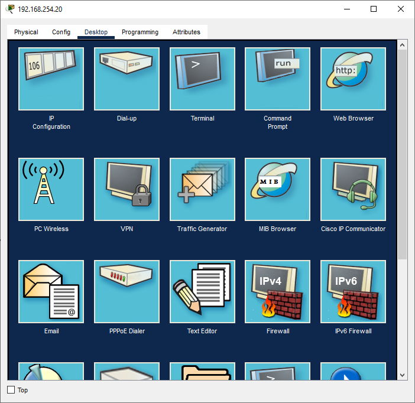
2.2.2: Configurar la Dirección IP:
Dentro de la pestaña "Desktop", encuentra y selecciona "IP Configuration" (Configuración IP).
Ingresa una dirección IP, máscara de subred, y puerta de enlace predeterminada (gateway) adecuadas para la red a la que estás conectando el ordenador.
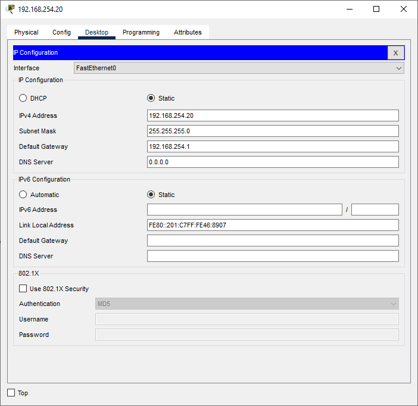
2.2.3: Verificar la Conectividad
Usar el Comando Ping:
Todavía en la pestaña "Desktop", selecciona "Command Prompt" (Símbolo del sistema).
Para verificar la conectividad con otro dispositivo en la red, se usa el comando ping seguido de la dirección IP del dispositivo destino. Por ejemplo: ping 192.168.1.1.
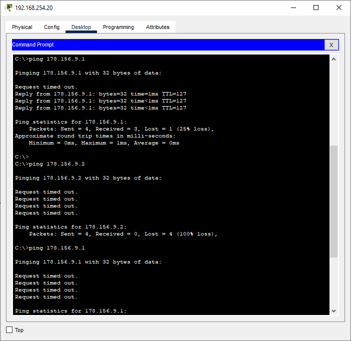
3. Conexión de Equipos
3.1 Conectar Dos Equipos Usando Cables de Red Adecuados
Para conectar dos equipos (por ejemplo, un PC con un switch o dos PCs directamente):
- Selecciona el cable adecuado que se ubica en la sección de abajo a mano izquierda,
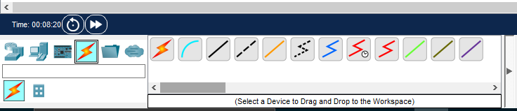
- normalmente se selecciona un cable de par trenzado para conectar dispositivos diferentes (PC a switch) o un cable cruzado para dispositivos iguales (PC a PC) tambien existe cable serial , fibra optica que estos no lo vamos a usar de momento
- Haz clic en el primer dispositivo, elige el puerto (Normalmente Fastethernet 0).
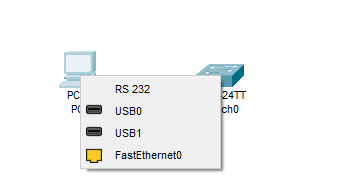
- Haz clic en el segundo dispositivo y selecciona el puerto (los mas bajo(1,2,3,4,5) se utiliza para los ordenador y dispositvos varios y los mas altos para conectar router y switch (20,21,22,23,24) ).
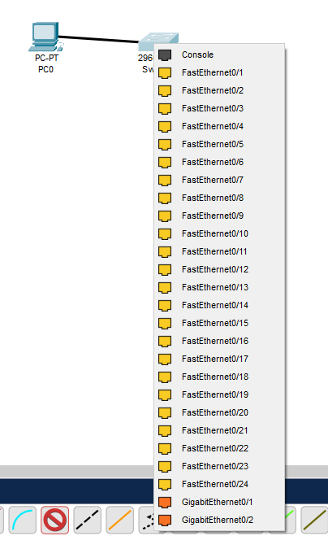
- Resultado Final
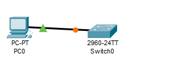
4. Modos de Operación
5. Modo de Ejecución y Comandos en Cisco Packet Tracer
En Cisco Packet Tracer, un switch o router pueden ser configurado en varios modos para realizar tareas de configuración y administración. Estos modos incluyen:
-
User EXEC Mode (Modo EXEC de Usuario): Modo por defecto al iniciar sesión en el switch, identificado por el prompt ">". Permite ejecutar comandos de visualización básicos.
- Foto de ejemplo real: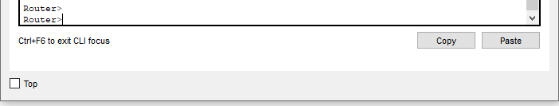
-
Privileged EXEC Mode (Modo EXEC con Privilegios): Se accede ingresando "enable" desde el modo User EXEC. Identificado por el prompt "#", permite ejecutar comandos de configuración y visualización avanzados.
- Foto de ejemplo real: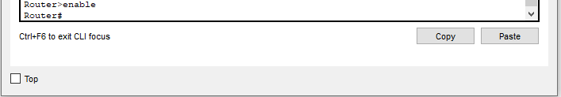
-
Global Configuration Mode (Modo de Configuración Global): Accesible desde el modo Privileged EXEC con "configure terminal" o "conf t". Permite configurar parámetros globales del switch como interfaces, VLANs, protocolos de enrutamiento, etc.
- Foto de ejemplo real: 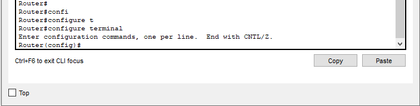
-
Interface Configuration Mode (Modo de Configuración de Interfaz): Se accede desde el modo Global Configuration con "interface [interface-id]". Permite configurar parámetros específicos de una interfaz, como direcciones IP, velocidad, duplex, etc.
- Foto de ejemplo real: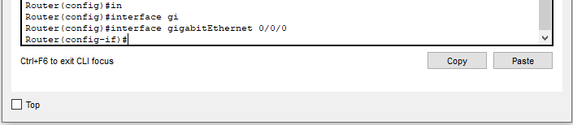
Estos son los modos básicos en un switch o router de Cisco de Packet Tracer, pudiendo existir modos adicionales o variantes según la versión del software y las características del dispositivo.
5.1 Abreviaturas y Trucos Variados
Existen comandos específicos para diferentes modos en el CLI de Cisco. Algunas abreviaturas y trucos comunes son:
| Abreviaturas | Comando Completo | Descripción | Modo de Ejecución |
|---|---|---|---|
| conf t | configure terminal | Accede al modo de configuración global. | Privileged EXEC Mode |
| int | interface | Accede a la configuración de una interfaz específica. | Global Configuration Mode |
| sh | show | Muestra configuraciones o estado de protocolos y conexiones. | User EXEC Mode / Privileged EXEC Mode |
| sh run | show running-config | Muestra la configuración activa en el dispositivo. | Privileged EXEC Mode |
| sh ip int br | show ip interface brief | Muestra un resumen de interfaces, incluyendo IPs. | User EXEC Mode / Privileged EXEC Mode |
| en | enable | Cambia al modo privilegiado. | User EXEC Mode |
| no | (negación) | Deshace comandos o desactiva configuraciones. | Global Configuration Mode / Interface Configuration Mode / Line Configuration Mode |
| end | (salir de modo configuración) | Regresa al modo EXEC privilegiado desde cualquier modo de configuración. | Global Configuration Mode / Interface Configuration Mode / Line Configuration Mode |
| wr | write | Guarda la configuración en la memoria NVRAM. | Privileged EXEC Mode |
| exit | (salir) | Sale del modo actual o cierra la sesión de terminal. | Cualquier modo excepto User EXEC Mode |
Nota: Existen más abreviaturas, pero se han listado las más utilizadas.
Tabulación: Al igual que en Linux, se puede usar el tabulador para completar un comando.
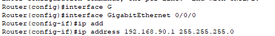